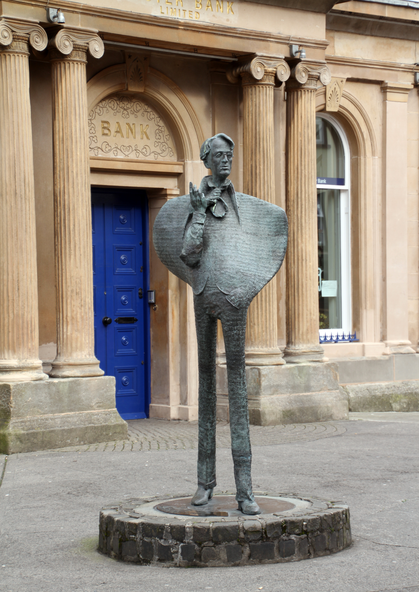

About Sligo
Sligo (Irish:Sligeach meaning 'abounding in shells') is a coastal seaport and the county town of County Sligo, Ireland, within the western province of Connacht. With a population of approximately 20,000 in 2016, it is the largest urban centre in the county, with Sligo Borough District constituting 61% (38,581) of the county's population of 63,000. Sligo is a commercial and cultural centre situated on the west coast of Ireland. Its surrounding coast and countryside, as well as its connections to the poet W. B. Yeats, have made it a tourist destination.
W.B Yeats
William Butler Yeats, one of Ireland's most celebrated poets, spent much of his childhood in Sligo. His grandfather was the Rector of Drumcliff church, just to the north of Sligo town, and he and his brother Jack loved to spend their school holidays with their grandparents. THE larger than life bronze sculpture of W. B. Yeats was officially unveiled by Senator Michael Yeats, the poet’s son, in front of the Ulster Bank building, Stephen Street, in May 1990. The eight-foot tall statue combined a realistic image of the internationally acclaimed poet with an abstract body, and was imprinted in positive relief with “cuts” from more than 150 of his poems. The cobblestone plinth on which the sculpture was mounted was made from stones handpicked on the Sligo quays. Lough Gill, situated predominantly in Sligo with parts of it also in neighboring County Leitrim, is also closely associated with Yeats. One of his better-known poems, “The Lake Isle of Innisfree” includes Yeats’s own personal questions on spirituality and Irish identity. Yeats longed for a simple life in this peaceful place, but the pull of the city was also evident in his life. There are a couple of tours available to experience this beautiful area of Sligo, known for its unique microclimate where unusual plants and other living things exist.
Sligo Area
Situated on a coastal plain facing the Atlantic Ocean, Sligo is located on low gravel hills on the banks of the Garavogue River between Lough Gill and the estuary of the Garavogue river leading to Sligo Bay. The town is surrounded on three sides by an arc of mountains, with the Ox Mountain ridges of Slieve Daeane and Killery Mountain to the southeast bordering Lough Gill. The flat topped limestone plateaux of Cope's, Keelogyboy and Castlegal Mountains to the north and northeast and the singular hill of Knocknarea with its Neolithic cairn to the west and the distinctive high plateau of Benbulben to the north.
Architecture
The town consists of a medieval core street layout, but with mainly 19th-century buildings, many of which are of architectural merit. The only surviving medieval building is Sligo Holy Cross Dominican Friary built in 1252. An arched tower and three sided cloister of the Abbey Church still survive. The next oldest extant building is the Cathedral of St Mary the Virgin and St. John the Baptist on John Street. The current building dates from 1730 when it was designed by the German architect Richard Cassels who was visiting to design Hazelwood House. The cathedral contains four memorials to the Pollexfen family, maternal relatives of W. B. Yeats.
Sligo Port
Sligo is one of just two operating ports on Ireland's northwest coast between Galway and Derry, the other being Killybegs. The harbour can accommodate ships with a maximum draft of 5.2 metres (17 ft) and a maximum length of 100 metres (330 ft); the Port of Sligo extends from the Timber Jetty for a distance of 1.3 kilometres (0.81 mi). The Harbour Commissioners of Sligo administered the port from 1877 until Sligo County Council took over responsibility for the Harbour from Sligo Harbour Commissioners in June 2006. Records show the development of Sligo's port, exporting agricultural goods to Britain and Europe, in the 13th century with the arrival of the Normans. In 1420 port dues were levied for the first time. Later, as a port under Gaelic lords the harbour continued to flourish.